上海 → 吉隆坡

吉隆坡 · KLCC 亲子日
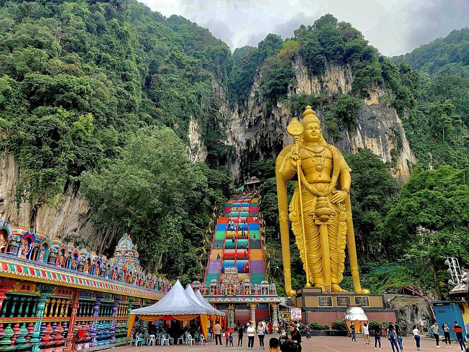


吉隆坡 → 马六甲


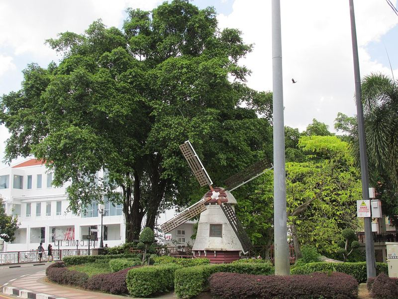
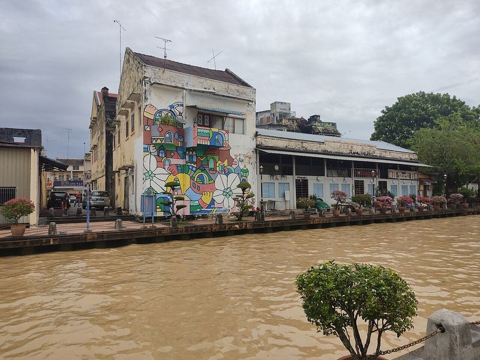
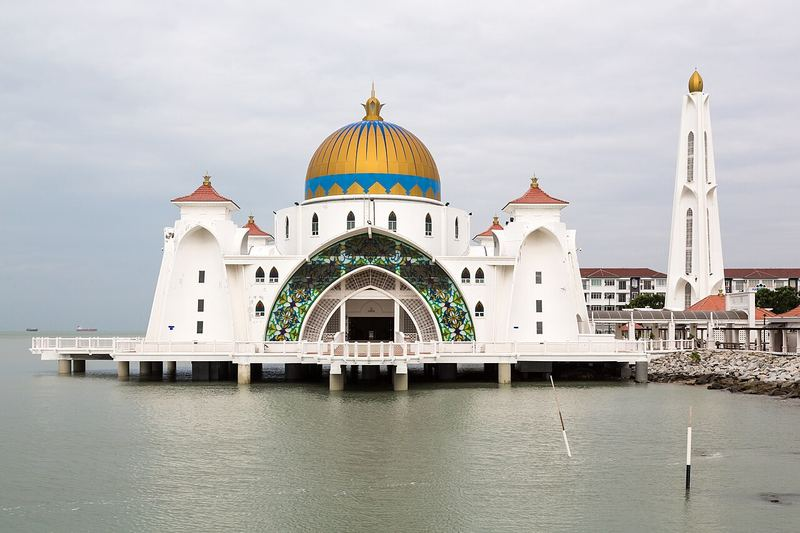
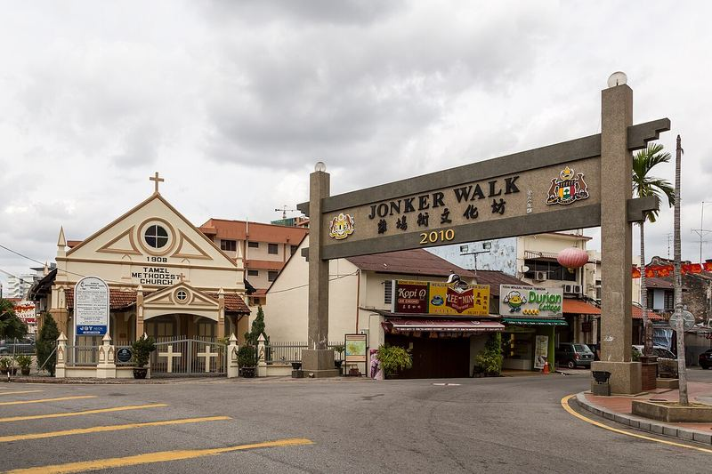
马六甲 → 吉隆坡机场 → 兰卡威

兰卡威 · 红树林 & 缆车
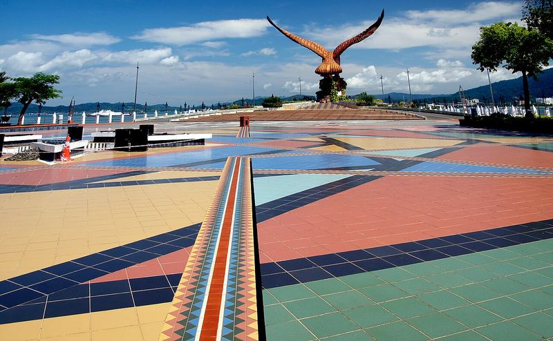
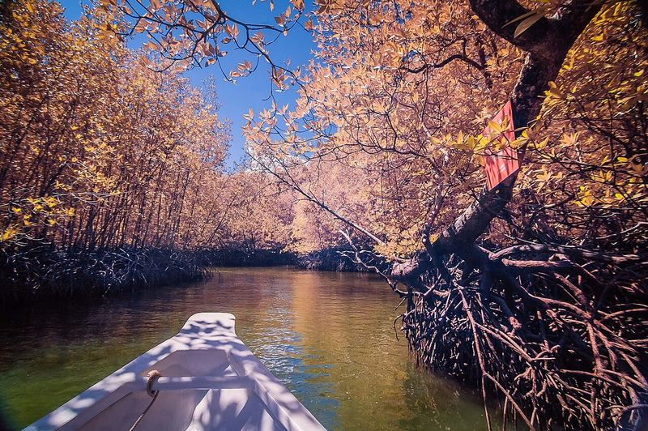

兰卡威 → 吉隆坡 → 上海
槟城：乔治市壁画 · 升旗山 · Entopia 蝴蝶园
乔治市（2008 世界遗产）街头壁画、娘惹/华人美食天堂；升旗山缆轨车（Penang Hill）；Entopia 蝴蝶园（室内外结合，适合小孩）。本次没选的原因见“地图”页说明：城市暴走+炎热对 3 岁孩子较累，交通拥堵；更适合孩子大一点、以美食为主的行程。
沙巴 · 亚庇
需再飞约 2.5 小时（从吉隆坡）。海岛浮潜、长鼻猴/萤火虫红树林、神山。上海有直飞亚庇的航班（待确认）。1 月受东北季风影响，海况需关注。适合单独一趟行程。
柔佛乐高乐园
乐高主题乐园 + 水上乐园 + 乐高酒店，最适合 3–12 岁。距吉隆坡约 3.5–4 小时车程（超出单日驾车上限），可作为“吉隆坡+新加坡”行程的一站。开放时间与票价待查。
布城 · 粉红清真寺
行政首都，粉红色的布特拉清真寺、湖景。离 KLIA 约 30 分钟，可在 D1 落地后或 D4 去机场前顺路（但会压缩午睡）。进清真寺需遮盖，女士需披袍/头巾（现场提供，参考）。
云顶高原
凉爽山区（约 20 多度），云顶天城缆车、室内外主题乐园。距 KL 约 1 小时山路，周末人多，山路弯多易晕车。
吉隆坡飞禽公园
大型步入式鸟园，可近距离看犀鸟、孔雀，适合小孩；位于湖滨公园内，可与国家清真寺顺路。开放时间与票价待查。
独立广场 · 苏丹阿都沙末大厦

摩尔式风格的红砖钟楼建筑，傍晚亮灯后很好看。机位：从独立广场草坪对面拍整个立面。离鬼仔巷约 1 公里，D3 早上时间够的话可以顺路，但会拖晚出发去马六甲的时间。
📸 社交媒体热门 · 旅游博客常见打卡点占美清真寺

吉隆坡最古老的清真寺之一，位于两条河的交汇处。机位：在对岸的“蓝池 River of Life”步道拍（晚上有蓝色灯光秀，时间待确认）。进寺须遮盖，开放时间待确认。
茨厂街 Petaling Street

和鬼仔巷相邻的唐人街，头顶挂满红灯笼。晚上最热闹，但人多、地面不平，带推车不太方便。
天后宫

山坡上的华人庙宇，屋顶下挂满红灯笼，是很热门的拍照点。开放时间各来源不一，待确认。春节前（1 月下旬）可能已经挂上新年灯饰（待确认）。离 KLCC 打车约 20 分钟（参考）。
📸 社交媒体热门 · 旅游博客、Instagram 常见默迪卡 118 大楼（外观）

世界第二高楼（678.9 米）。在鬼仔巷和茨厂街一带可以把它和老房子拍在一起（13blog.tw）；观景台是否开放、票价待确认。
Heli Lounge Bar 直升机坪酒吧
楼顶直升机停机坪改成的酒吧，可以拍双子塔和吉隆坡塔夜景，社交媒体上很火。酒吧环境、晚上营业，不适合 3 岁孩子；儿童能否进入、营业时间、着装要求都待确认。只放在备选，供大人有机会单独出去时参考。
📸 社交媒体热门 · 网络热门（待确认）甘榜摩登 Kampung Morten
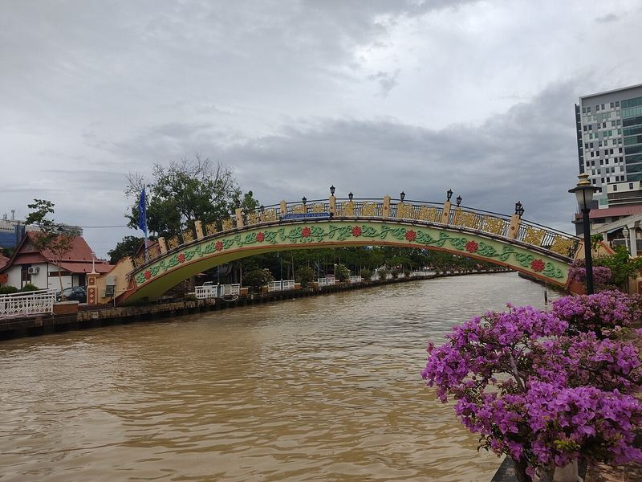
马六甲河边的传统马来高脚屋村，坐河游船时能看到。这里有居民住，拍居民前先问一声（马六甲旅游局）。步行过去要走一段河边步道，晚上河边灯光好看。
丹绒鲁海滩
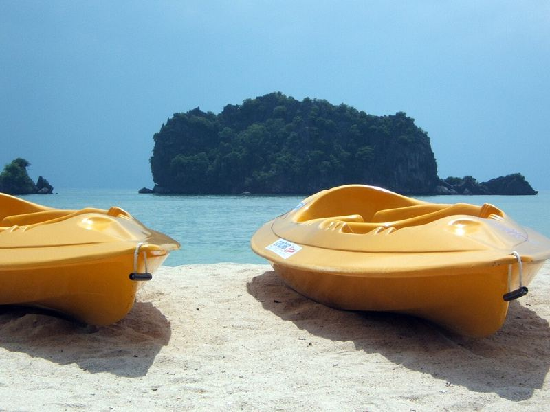
兰卡威北部安静的海滩，退潮时可以走到附近的小岛（潮汐与安全待确认）。离珍南海滩约 45 分钟车程（参考），可替代 D6 上午的酒店海滩。
Pantai Kok 海湾 · 灯塔
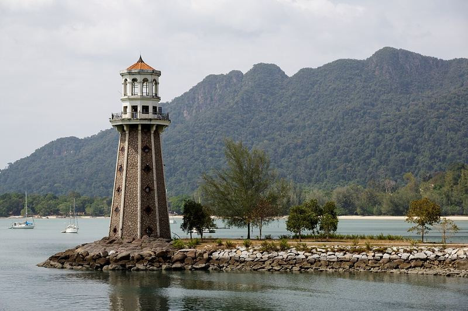
缆车站附近的海湾，有一座小灯塔和远处的群山，坐完缆车可以顺路去看日落（路线时间待确认）。图中为当地的灯塔景观。
七仙井瀑布 Telaga Tujuh
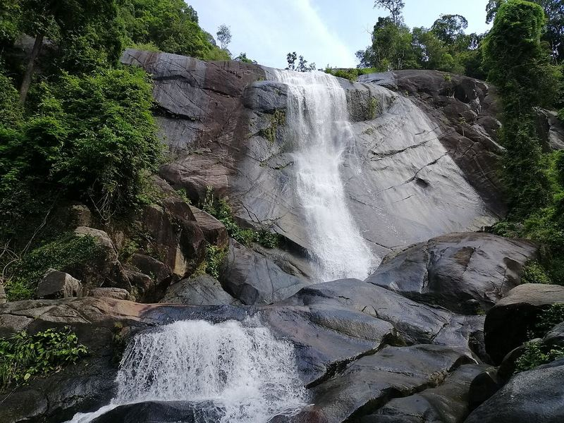
缆车站附近的山间瀑布，要爬一段很陡的台阶山路，不能推车，带 3 岁孩子不推荐。